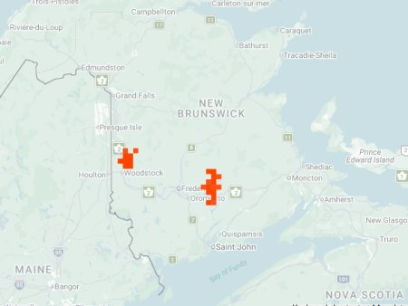

photo: Jimmy Dee, June 24, 2022

Distribution map (based on iNaturalist observations)
Identification
- Small-medium (11–14 mm), dark chocolate-brown to black with metallic green/blue reflections.
- White maculations reduced or absent; body robust and shiny.
- Found on cobblestone beaches; short, quick flights when disturbed.
Habitat in New Brunswick
Restricted to high, sparsely vegetated cobblestone beaches on treed islands in the Saint John River (between Woodstock and Bath) and similar sites on Grand Lake shores. Requires clean, fast-flowing water, infrequent flooding, and minimal vegetation for larval burrows in sand/gravel patches.
Flight Season in NB
June 14 – August 2 (summer only; peak July).
Distribution & Notes
Extremely rare in New Brunswick — known from only 8–9 sites (6 on Saint John River islands, 3 on Grand Lake). Federally endangered in Canada (COSEWIC). Highly sensitive to habitat changes (dams, pollution, shoreline development). High conservation priority; more surveys needed.